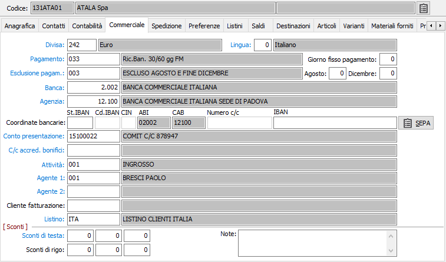
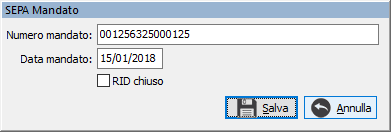

Commerciale

CODICE DIVISA: codice alfanumerico di 3 caratteri presente in tabella Divise per indicare la divisa con la quale viene trattato il cliente. Viene proposto automaticamente in fase di emissione documenti. Sul campo sono attive le funzioni di ricerca (F9) e manutenzione (CTRL+W) sulla tabella stessa.
LINGUA: codice numerico di un carattere, presente nella tabella Lingue, per definire la lingua da utilizzare nei documenti prodotti per il cliente. Sul campo sono attive le funzioni di ricerca (F9) e manutenzione (CTRL+W) sulla tabella stessa.
PAGAMENTO: inserire il codice del pagamento utilizzato dal cliente, che verrà proposto automaticamente in fase di emissione documenti. Sul campo sono attive le funzioni di ricerca (F9) e manutenzione (CTRL+W) sulla tabella stessa.
GIORNO FISSO: eventuale giorno fisso di scadenza pagamento, relativo al cliente attivo.
ESCLUSIONE PAGAMENTO: inserire, se necessario, il codice del tipo di esclusione accordata per i pagamenti al cliente. Sul campo sono attive le funzioni di ricerca (F9) e manutenzione (CTRL+W) sulla tabella stessa.
AGOSTO: se valorizzato esclude il mese di agosto e indica il giorno del mese di settembre valido per il pagamento.
DICEMBRE: se valorizzato esclude gli ultimi 15 giorni del mese di dicembre e indica il giorno del mese di gennaio valido per il pagamento.
BANCA: inserire il codice della banca di appoggio del cliente. Tale codice verrà proposto automaticamente in fase di emissione documenti. Sul campo sono attive le funzioni di ricerca (F9) e manutenzione (CTRL+W) sulla tabella stessa.
AGENZIA: inserire il codice dell'agenzia della banca di appoggio del cliente. Tale codice verrà proposto automaticamente in fase di emissione documenti. Sul campo sono attive le funzioni di ricerca (F9) e manutenzione (CTRL+W) sulla tabella stessa.

COORDINATE BANCARIE: coordinate bancarie del cliente, da utilizzare per i bonifici. Se presente il modulo gestione effetti è presente anche il pulsante SEPA che consente l'inserimento del numero e la data del mandato (ed il flag di chiusura mandato) da utilizzare nella generazione del tracciato XML o testuale relativo ai RID SEPA.CONTO PRESENTAZIONE: contiene il codice della banca dell'utente sulla quale verranno presentati per l'incasso gli effetti emessi al cliente in esame. L'informazione può essere inserita dagli utenti che presentano gli effetti presso un solo Istituto di credito. Sul campo sono attive le funzioni di ricerca (F9) e manutenzione (CTRL+W) sulla tabella stessa.
CONTO ACCREDITO BONIFICI: contiene il codice della banca dell'utente sulla quale verranno accreditati i bonifici. Sul campo sono attive le funzioni di ricerca (F9) e manutenzione (CTRL+W) sulla tabella stessa.
CODICE ATTIVITÀ: inserire il codice dell'attività del cliente. Sul campo sono attive le funzioni di ricerca (F9) e manutenzione (CTRL+W) sulla tabella stessa.
CODICE AGENTE 1: inserire il codice dell'agente che cura il cliente. Tale codice verrà proposto automaticamente in fase di emissione documenti. Sul campo sono attive le funzioni di ricerca (F9) e manutenzione (CTRL+W) sulla tabella stessa.
CODICE AGENTE 2: inserire il codice dell’eventuale secondo agente che segue il cliente. Tale codice verrà proposto automaticamente in fase di emissione documenti. Sul campo sono attive le funzioni di ricerca (F9) e manutenzione (CTRL+W) sulla tabella stessa.
CLIENTE FATTURAZIONE: codice che indica il cliente di fatturazione preferenziale da proporre in fase di inserimento nuovi documenti. Sul campo sono attive le funzioni di ricerca (F9) sulla tabella stessa.
CODICE LISTINO: inserire l'eventuale codice del listino del cliente. Tale codice verrà proposto automaticamente in fase di emissione documenti. Sul campo sono attive le funzioni di ricerca (F9) e manutenzione (CTRL+W) sulla tabella stessa.
SCONTI DI TESTA: in base a quanto inserito in configurazione, possono comparire fino a 5 sconti. Inserire tali percentuali di sconto/maggiorazione in questi campi. Il segno è determinato da quello che si è inserito in configurazione sul campo "tipo trattamento sconti". In fase di immissione ordine, Ddt o fattura, le percentuali sono proposte automaticamente come sconti/maggiorazioni di testa.
SCONTI DI RIGO: in base a quanto inserito in configurazione, possono comparire fino a 5 sconti. Inserire tali percentuali di sconto/maggiorazione in questi campi. Il segno è determinato da quello che si è inserito in configurazione sul campo "tipo trattamento sconti". In fase di immissione ordine, Ddt o fattura, le percentuali sono proposte automaticamente come sconti/maggiorazioni di rigo.
NOTE: campo note per descrivere annotazioni di tipo commerciale.